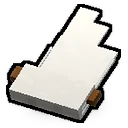
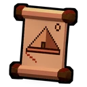

Oak Plank Oak Plank | Oak Log ×25 | 1 | |
 Flax Fabric Flax Fabric | Flax ×25 | 1 | |
 Iron Ingot Iron Ingot | Iron Ore ×25, Coal ×12 | 1 | |
 Rough Leather Rough Leather | Leather ×25 | 10 | |
 Maple Plank Maple Plank | Maple Log ×25 | 10 | |
 Cotton Fabric | Cotton ×25 | 10 | |
 Mithril Ingot Mithril Ingot | Mithril Ore ×25, Coal ×12 | 10 | |
 Ipe Plank Ipe Plank | Ipe Log ×25 | 30 | |
 Adamantite Ingot Adamantite Ingot | Adamantite Ore ×25, Coal ×12 | 30 | |
 Nettle Fabric Nettle Fabric | Nettle ×25 | 30 | |
| Ipe Plank | Maple Plank ×12, Scrap ×5, Slime Ball ×1 | 33 | Master Refinery |
| Adamantite Ingot | Mithril Ingot ×12, Scrap ×5, Slime Ball ×1, Coal ×6 | 33 | Master Refinery |
| Nettle Fabric | Cotton Fabric ×12, Scrap ×5, Slime Ball ×1 | 33 | Master Refinery |
 Orichalcum Ingot Orichalcum Ingot | Orichalcum Ore ×25, Coal ×12 | 50 | |
 Darkwood Plank Darkwood Plank | Darkwood Log ×25 | 50 | |
 Lotus Cloth Lotus Cloth | Lotus Leaves ×25 | 50 | |
| Orichalcum Ingot | Adamantite Ingot ×12, Scrap ×10, Thick Slime ×1, Coal ×10 | 50 | Master Refinery |
| Darkwood Plank | Ipe Plank ×12, Scrap ×10, Thick Slime ×1 | 50 | Master Refinery |
| Lotus Cloth | Nettle Fabric ×12, Scrap ×10, Thick Slime ×1 | 50 | Master Refinery |
 Horn Chunks ×10 Horn Chunks ×10 | Broken Horn ×1 | 30 | |
 Draught of Fury ×2 Draught of Fury ×2 | Worm Meat ×4, Horn Chunks ×2, Nettle ×15, Coal ×25 | 30 | Cookhouse |
 Ironbark Tonic ×2 Ironbark Tonic ×2 | Darkwood Log ×3, Rugged Hide ×2, Adamantite Ingot ×2, Coal ×20 | 35 | Cookhouse |
 Hunter's Brew ×2 Hunter's Brew ×2 | Guppy ×40, Carrot ×5, Horn Chunks ×1, Coal ×15 | 25 | Cookhouse |
 Scholar's Tea ×2 Scholar's Tea ×2 | Lotus Leaves ×75, Nettle Fabric ×4, Carrot ×10, Coal ×15 | 40 | Cookhouse |
 Gilded Draught ×2 Gilded Draught ×2 | Royal Jelly ×2, Riveted Plate ×3, Lotus Leaves ×30, Coal ×20 | 40 | Cookhouse |
 Gambler's Brew ×2 Gambler's Brew ×2 | Thick Slime ×1, Bone Meal ×8, Darkwood Plank ×2, Trout ×40, Coal ×15 | 45 | Cookhouse |
 Fertiliser Fertiliser | Flax ×30, Guppy ×20, Coal ×10 | 5 | |
 Rich Compost Rich Compost | Fertiliser ×2, Slime Ball ×2, Eye Ball ×1 | 25 | |
| Rich Compost | Fertiliser ×2, Bone Meal ×6, Eye Ball ×1 | 25 | |
| Super Compost | Rich Compost ×2, Royal Jelly ×2, Thick Slime ×1 | 35 | |
 Woodcutter's Compost Woodcutter's Compost | Adamantite Ore ×10, Nettle ×10, Trout ×20, Fertiliser ×2 | 30 | |
 Miner's Compost Miner's Compost | Ipe Log ×10, Nettle ×10, Trout ×20, Fertiliser ×2 | 30 | |
 Angler's Compost Angler's Compost | Ipe Log ×10, Adamantite Ore ×10, Nettle ×10, Fertiliser ×2 | 30 | |
 Farmer's Compost Farmer's Compost | Ipe Log ×10, Adamantite Ore ×10, Trout ×20, Fertiliser ×2 | 30 | |
 Respec Shard ×10 Respec Shard ×10 | Respec Orb ×1 | 50 | Scrap Forge |
 Warden's Seal Warden's Seal | Scrap ×8, Rough Leather ×4, Eye Ball ×3, Gold Coin ×300, Coal ×10 | 26 | Sealwright |
 Treasure Seal ×2 Treasure Seal ×2 | Bandit Crown ×1, Horn Chunks ×2, Eye Ball ×5, Gold Coin ×1,000, Coal ×15 | 30 | Sealwright |
 Rugged Satchel Rugged Satchel | Rugged Hide ×4, Broken Horn ×1, Rough Leather ×10, Gold Coin ×500 | 30 | |
 Slime Bag Slime Bag | Slime Ball ×12, Scrap ×3, Leather ×4 | 30 | |
 Provisions Pouch ×2 Provisions Pouch ×2 | Leather ×5, Rough Leather ×5, Flax Fabric ×2, Gold Coin ×100 | 15 | |
 Bandage Roll ×2 Bandage Roll ×2 | Flax ×40, Leather ×4, Carrot ×5 | 20 | |
| Bandage Roll | Spider Silk ×3, Minor Healing Potion ×1 | 20 | |
 Blank Chart ×3 Blank Chart ×3 | Flax Fabric ×4, Oak Plank ×2, Coal ×20 | 28 | Cartographer's Table |
 Fields Chart ×2 Fields Chart ×2 | Blank Chart ×1, Carrot ×12, Leather ×4, Eye Ball ×2, Gold Coin ×100 | 28 | Cartographer's Table |
 Camp Chart ×2 Camp Chart ×2 | Blank Chart ×1, Minor Healing Potion ×2, Cotton Fabric ×6, Gold Coin ×250 | 28 | Cartographer's Table |
 Town Chart ×2 Town Chart ×2 | Blank Chart ×1, Bandit Crown ×1, Iron Ingot ×10, Gold Coin ×400 | 29 | Cartographer's Table |
 Cyclops Chart ×2 Cyclops Chart ×2 | Blank Chart ×1, Punchy's Skin ×1, Eye Ball ×10, Gold Coin ×500 | 29 | Cartographer's Table |
| Cyclops Chart ×2 | Blank Chart ×1, Shooty's Skin ×1, Eye Ball ×10, Gold Coin ×500 | 29 | Cartographer's Table |
| Cyclops Chart ×2 | Blank Chart ×1, Bernie's Skin ×1, Eye Ball ×10, Gold Coin ×500 | 29 | Cartographer's Table |
 Cultist Chart ×2 Cultist Chart ×2 | Blank Chart ×1, Broken Horn ×1, Horn Chunks ×2, Nettle Fabric ×4, Gold Coin ×750 | 30 | Cartographer's Table |
 Dump Chart ×2 Dump Chart ×2 | Blank Chart ×1, Scrap ×10, Coal ×60, Gold Coin ×500 | 38 | Cartographer's Table |
 Bowl Chart ×2 Bowl Chart ×2 | Blank Chart ×1, Worm Fang ×1, Worm Meat ×6, Leather ×4, Gold Coin ×750 | 34 | Cartographer's Table |
 Storm Chart ×2 Storm Chart ×2 | Blank Chart ×1, Riveted Plate ×2, Mithril Ingot ×2, Scrap ×6, Gold Coin ×900 | 36 | Cartographer's Table |
 Pyramid Chart ×2 Pyramid Chart ×2 | Blank Chart ×1, Trapped Spirit ×1, Bone Meal ×8, Nettle Fabric ×4, Gold Coin ×1,000 | 38 | Cartographer's Table |
 Cave Chart ×2 | Blank Chart ×1, Spider Silk ×4, Mithril Ore ×6, Coal ×20, Gold Coin ×1,100 | 40 | Cartographer's Table |
 Grotto Chart ×2 Grotto Chart ×2 | Blank Chart ×1, Slime Ball ×12, Thick Slime ×1, Scrap ×3, Gold Coin ×750 | 36 | Cartographer's Table |
 Riveted Plate Riveted Plate | Scrap ×10, Adamantite Ingot ×1, Coal ×10 | 60 | Smelter |
 Ancient Mask Ancient Mask | Ancient Coke ×2, Perfect Orichalcum ×1 | 55 | After Behind the Mask |
 Guppy Stew
Guppy Stew Minor Healing Potion
Minor Healing Potion Carrot Stew
Carrot Stew Worm Steak
Worm Steak Slime Broth
Slime Broth Royal Slime Broth
Royal Slime Broth Emergency Ration
Emergency Ration Trail Mix ×2
Trail Mix ×2 Leather Cap
Leather Cap Leather Tunic
Leather Tunic Wooden Buckler
Wooden Buckler Iron Helmet
Iron Helmet Wizard Hat
Wizard Hat Wizard Robe
Wizard Robe Rough Leather Cap
Rough Leather Cap Rough Leather Tunic
Rough Leather Tunic Mithril Helmet
Mithril Helmet Cotton Hat
Cotton Hat Cotton Robe
Cotton Robe Rugged Hide Cap
Rugged Hide Cap Rugged Hide Cuirass
Rugged Hide Cuirass Adamantite Helmet
Adamantite Helmet Adamantite Armor
Adamantite Armor Nettle Hat
Nettle Hat Nettle Robe
Nettle Robe Silkweave Robe
Silkweave Robe Shooty's Hat
Shooty's Hat Bernie's Hat
Bernie's Hat Mithril Buckler
Mithril Buckler Adamantite Buckler
Adamantite Buckler Orichalcum Helmet
Orichalcum Helmet Orichalcum Armor
Orichalcum Armor Orichalcum Buckler
Orichalcum Buckler Lotus Hat
Lotus Hat Lotus Robe
Lotus Robe Lotus-Lined Cap
Lotus-Lined Cap Lotus-Lined Tunic
Lotus-Lined Tunic Lotus Tome
Lotus Tome Spiked Buckler
Spiked Buckler Kamikaze Necklace
Kamikaze Necklace Fang Quiver
Fang Quiver Bernie's Spirit Hat
Bernie's Spirit Hat Shooty's Goggled Hat
Shooty's Goggled Hat Riveted Adamantite Armor
Riveted Adamantite Armor Riveted Adamantite Buckler
Riveted Adamantite Buckler Barbed Buckler
Barbed Buckler Cultist Book
Cultist Book Cultist's Focus
Cultist's Focus Orichalcum Warhelm
Orichalcum Warhelm Spiritsight Hat
Spiritsight Hat Ancient Warhelm
Ancient Warhelm Unbound Focus
Unbound Focus Ring of Garbage
Ring of Garbage Oozing Ring
Oozing Ring Hourglass Amulet
Hourglass Amulet King's Amulet
King's Amulet Cultist's Amulet
Cultist's Amulet Clutched Ring
Clutched Ring Ring of Thorns
Ring of Thorns Iron Sword
Iron Sword Maple Bow
Maple Bow Mithril Sword
Mithril Sword Fire Staff
Fire Staff Adamantite Sword
Adamantite Sword Bandit Blade (A)
Bandit Blade (A) Ipe Bow
Ipe Bow Spiky Bow
Spiky Bow Horned Staff
Horned Staff Orichalcum Sword
Orichalcum Sword Darkwood Bow
Darkwood Bow Darkwood Staff
Darkwood Staff Burning Staff
Burning Staff Sunstone Staff
Sunstone Staff